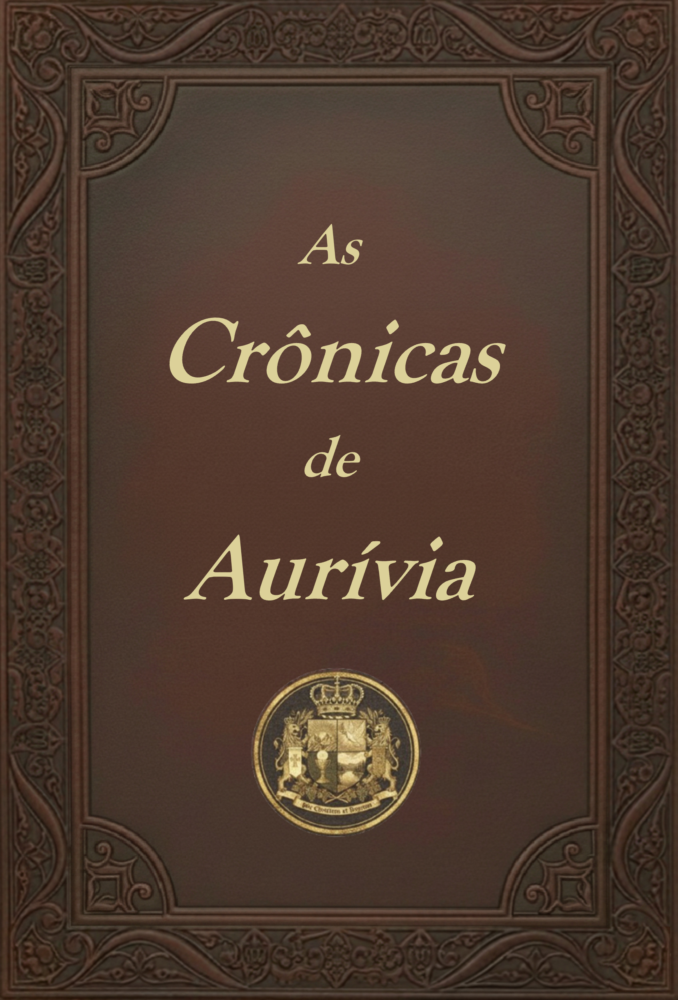

Uma aventura medieval inspirada na tradição cristã e em seus valores imortais
Uma saga de fé, coragem e esperança, em um reino onde homens simples são chamados a defender tudo aquilo que amam.
Quero meu exemplar
Em meio a colinas verdejantes e rios caudalosos, nasce a saga de Aurívia — um reino forjado na fé, na honra e na esperança.
A Cruz e a Coroa, primeiro volume de As Crônicas de Aurívia, conta como um camponês e pai de família tem sua vida pacata abalada pela ameaça bárbara que retorna do Sul trazendo destruição. Entre memórias antigas, a voz dos bardos e a promessa de um Rei enviado por Deus, ele descobre que o destino do seu povo se entrelaça com sua própria coragem.
Com inspiração medieval e espiritual, esta narrativa combina batalhas épicas, sinais celestes e o drama humano de um povo simples chamado a defender, com a vida, tudo o que ama e acredita. É uma história de fé e sacrifício, mas também de esperança e redenção, destinada a leitores que buscam aventura, emoção e um enredo que ecoa valores atemporais.
Muito além do cenário de uma única história, Aurívia é um reino construído sobre séculos de memória, tradições e fé. Seus vales, rios, montanhas e cidades testemunharam o surgimento de reis, santos, guerreiros e homens comuns que, em diferentes épocas, foram chamados a defender aquilo que consideravam sagrado.
Inspirado pela história medieval e pela tradição cristã, o universo de As Crônicas de Aurívia procura resgatar valores muitas vezes esquecidos pela literatura contemporânea. Honra, fidelidade, família, coragem, sacrifício, esperança e confiança na Providência não aparecem apenas como temas, mas como forças que moldam as escolhas de seus personagens.
Cada livro revelará um novo capítulo da história desse reino, permitindo ao leitor conhecer diferentes personagens, lugares e acontecimentos que, juntos, compõem uma grande saga sobre homens e mulheres que descobriram que a verdadeira grandeza nasce da fidelidade ao bem, mesmo diante das maiores provações.
Lucas Felipe da Silva é casado, pai de duas meninas, estudante de História e catequista da Igreja Católica. Inspirado pela tradição cristã, pela história medieval e pelos grandes clássicos da literatura, criou o universo de As Crônicas de Aurívia, uma série de aventura épica medieval em que a fé, a coragem, a fidelidade e a esperança ocupam o centro da narrativa. Em A Cruz e a Coroa, seu romance de estreia, convida o leitor a atravessar as fronteiras de um Reino cuja maior batalha não se trava apenas com espadas, mas no coração de homens chamados a lutar por aqueles que amam e por aquilo em que acreditam.
Ficarei muito feliz em conversar com você. Se quiser saber mais sobre o livro, sobre o universo de Aurívia ou sobre como adquirir um exemplar, basta me enviar uma mensagem.
Tirar uma dúvida